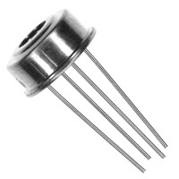
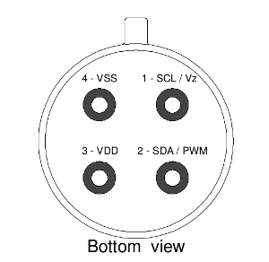
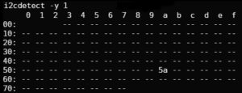
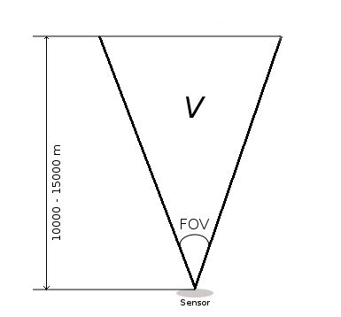
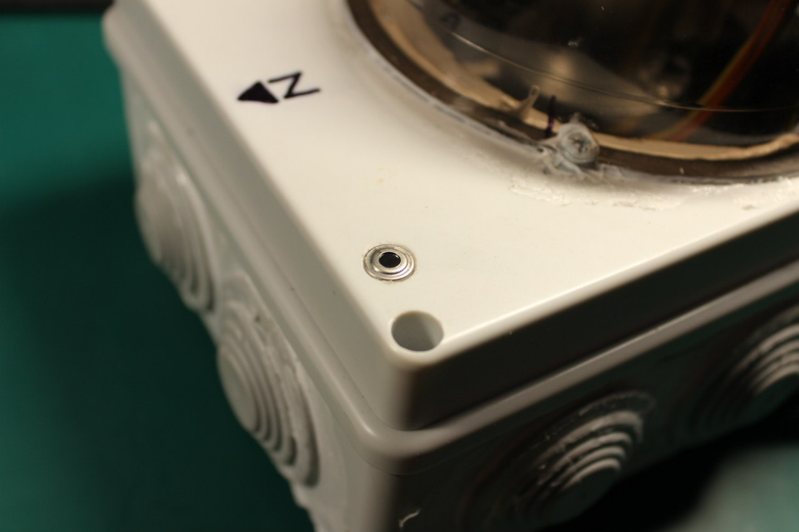

MLX90614 is a cheap and popular infrared thermometer from Melexis. This device is made in different versions for different purposes.
You can get a general-purpose version with 0.5 accuracies or for medical purposes with accuracy up to 0.2.
Also, you can choose the voltage you need: 3.3v or 5v versions are available.
With MLX90614, you can distantly measure the objects’ temperature, even the temperature of the sky. This enables a wide range of tasks in science and technics.
This article will show how to connect this device to the Raspberry PI microcomputer via the i2c bus.
Inside the hermetic package, you can find two sensors – one infrared and one thermopile for classical temperature sensing. Thermopiles may be used for some calibration of the main infrared sensor.
{kind=link}
Most important characteristics of this device you can find in the table below.
For full specifications, description, and complete usage, please use the official datasheet.
MLX90614 specifications
| Power supply | 5V for MLX90614Axx 3.3V for MLX90614Bxx |
| Temperature ranges | -40...+125 ̊C for ambient sensor -70...+380 ̊C for infrared sensor |
| Accuracy | 0.5°C for general purpose version 0.2°C for medical version Both sensors |
| Infrared sensor field of view | 90° for MLX90614xAA |
| Infrared sensor wavelengths | 5.5 – 14 μm |
| Ambient temperature ranges | -40...+85 C |
| Max current | 2 mA |
Device pinout

VDD – power supply (3.3 or 5 volts).
SCL – i2c/SMBus clock.
SDA – i2c/SMBus data or PWM output.
VSS/GND – Ground.
Please always carefully check voltages. 5v can kill your 3.3 v device!
Connecting to the Raspberry Pi.
It’s simple.
{kind=link}
R1 and R2 – 4K7 are optional because Raspberry contains such resistors aboard. It may be used only in case of a “long” line.
C1 capacitor is important and should be placed as close as possible to the device.
Another important note about voltages! Raspberry PI is a 3.3v device and not tolerant of 5v inputs. So in the case of a 5v MLX device, an additional voltage shifter should be used!
By default, the device is working in SMBus mode, but my sample was in PWM mode. What was puzzled me for some time i2c bus was full of random numbers. But after connecting the oscilloscope, I finally figured out what was going on and switched MLX to the “normal” SMBus mode.
Switching is simple – pull the SCL pin to the ground for a short time. After resetting device returns to the original work mode. For permanent switching, some EEPROM values should be corrected. EEPROM reading and writing will be discussed below.
Programming
There are two ways to work with i2c devices.
- Using hardware i2c bus through i2c_bcm2708 kernel module and libi2c library.
- Using a popular bcm2835 library with software emulation of the i2c protocol.
Looking ahead, I can tell you that I don’t have any problems with bcm2835. MLX device worked like a charm.
But I didn’t prefer this way due to its programmatic nature. Why emulate some hardware bus when we already had one? Especially on such a weak device as a Raspberry.
So I chose the i2c_bcm2708, and this is the beginning of the interesting debugging with magic…
First of all, we need to load the i2c_bcm2708 kernel module. We can do it with a modprobe command: sudo modprobe i2c_bcm2708
For automatically loading this module on every boot, add the module name to the end of the /etc/modules file.
After successful module loading you can find two new devices: /dev/i2c-0 and /dev/i2c-1. There are two separate i2c buses, and in the case of the first generation of the Raspberry – only i2c-1 is available on the GPIO header. i2c-0 is available for manual soldering. In later Raspberry models, both buses are available on the GPIO header.
To check that the MLX device is properly connected and working, run this command: i2cdetect –y 1 (1 means /dev/i2c-1 device). This utility is available in the i2c-tools package.
The Default MLX address is 0x5A. And if everything is OK and the MLX device is lonely on the bus – you can see such output:

In the case of numbers chaos, your device might be in PWM mode and should be switched as described earlier.
Okay, let’s write a simple program.
#include <sys/ioctl.h> #include <sys/types.h> #include <sys/stat.h> #include <fcntl.h> #include <stdio.h> #include <errno.h> #include <string.h> #include <linux/i2c-dev.h> /// #define I2C_DEV_PATH "/dev/i2c-1" /* Just in case */ #ifndef I2C_SMBUS_READ #define I2C_SMBUS_READ 1 #endif #ifndef I2C_SMBUS_WRITE #define I2C_SMBUS_WRITE 0 #endif typedef union i2c_smbus_data i2c_data; int main() { int fdev = open(I2C_DEV_PATH, O_RDWR); // open i2c bus if (fdev < 0) { fprintf(stderr, "Failed to open I2C interface %s Error: %s\n", I2C_DEV_PATH, strerror(errno)); return -1; } unsigned char i2c_addr = 0x5A; // set slave device address, default MLX is 0x5A if (ioctl(fdev, I2C_SLAVE, i2c_addr) < 0) { fprintf(stderr, "Failed to select I2C slave device! Error: %s\n", strerror(errno)); return -1; } // enable checksums control if (ioctl(fdev, I2C_PEC, 1) < 0) { fprintf(stderr, "Failed to enable SMBus packet error checking, error: %s\n", strerror(errno)); return -1; } // trying to read something from the device unsing SMBus READ request i2c_data data; char command = 0x06; // command 0x06 is reading thermopile sensor, see datasheet for all commands // build request structure struct i2c_smbus_ioctl_data sdat = { .read_write = I2C_SMBUS_READ, .command = command, .size = I2C_SMBUS_WORD_DATA, .data = &data }; // do actual request if (ioctl(fdev, I2C_SMBUS, &sdat) < 0) { fprintf(stderr, "Failed to perform I2C_SMBUS transaction, error: %s\n", strerror(errno)); return -1; } // calculate temperature in Celsius by formula from datasheet double temp = (double) data.word; temp = (temp * 0.02)-0.01; temp = temp - 273.15; // print result printf("Tamb = %04.2f\n", temp); return 0; }
Compile and run:
gcc test.c -o test && ./testNOTE: If I2C_SMBUS_READ and I2C_SMBUS_WORD_DATA is undeclared please try to include <linux/i2c.h> instead or redifine this commands: #ifndef I2C_SMBUS_READ #define I2C_SMBUS_READ 1 #endif #ifndef I2C_SMBUS_WRITE #define I2C_SMBUS_WRITE 0 #endif
And Oops! We got the error “Failed to perform I2C_SMBUS transaction, error: bad message”
So what is the problem? Sure, we did everything correctly and sent the correct messages to the device.
I’ve spent a few days trying to figure out what is going on. Digging Raspberry PI forums, other code examples, and even the Linux kernel.
As I already noted, using the bcm2835 library caused no errors.
Finally, I’ve connected my logic analyzer to the Raspberry i2c bus and captured both communications – using the bcm2835 code and this example code.
Looking datasheet, we can find an example of the proper SMBus communication.
{kind=link}
But the analyzer showed something strange.
A long pause after ACK is caused by an extra stop bit (red dot), just after the ACK packet.
The device recognizes this situation as two separate writes. But both these write operations are incomplete and incorrect, of course.
And for example, this is a request made with the bcm2835 library.
{kind=link}
{kind=link}
Everything is ok as expected.
Digging the forums, I found that such behavior is a feature of the Raspberry i2c_bcm2708 driver. The driver should be switched to the “combined” mode to stop such packet splitting.
Fortunately, this can be done with a simple command (as root):
echo -n 1 > /sys/module/i2c_bcm2708/parameters/combinedUPD: On modern devices with a modern OS, this is not required! I2C bus works correctly from the box 🙂
Tested on Raspberry PI 3 and newer, the Raspbian version is 10.1 (Buster)
Run our test utility, and magic happens.
sudo ./test
Tamb = 19.4It works!
Now it’s time to write a fully functional utility.
You can find all EEPROM and RAM addresses in the MLX datasheet.
{kind=link}
PWCTRL is what we need to switch off PWM mode permanently.
Register description
{kind=link}
So to disable PWM mode, just set the first (0) bit to the zero value. Simple.
Temperatures are reading from RAM.
{kind=link}
Here you can see infrared channels RAW data (some versions of the MLX device contain two infrared sensors, see documentation), thermopile sensor temperature value (Ta), and infrared sensors calculated values (Tobj1 and Tobj2). For the single IR sensor device temperature value is read from Tojb1.
I’ve made a header file with all useful address values.
// RAM #define MLX90614_RAWIR1 0x04 #define MLX90614_RAWIR2 0x05 #define MLX90614_TA 0x06 #define MLX90614_TOBJ1 0x07 #define MLX90614_TOBJ2 0x08 // EEPROM #define MLX90614_TOMAX 0x20 #define MLX90614_TOMIN 0x21 #define MLX90614_PWMCTRL 0x22 #define MLX90614_TARANGE 0x23 #define MLX90614_EMISS 0x24 #define MLX90614_CONFIG 0x25 #define MLX90614_ADDR 0x2E #define MLX90614_ID1 0x1C #define MLX90614_ID2 0x1D #define MLX90614_ID3 0x1E #define MLX90614_ID4 0x1F
Full source code of the utility with Makefile and good Readme you can find on my GitHub.
The compilation is simple. Just call make.
Let’s test this program.
Reading infrared temperature from the device on i2c bus 1 and with address 0x5A:
./read_mlx90614 --bus 1 --i2c_addr 0x5a -i
Tobj = 21.3Seems plausible.
Now thermopile:
./read_mlx90614 --bus 1 --i2c_addr 0x5a -a
Tamb = 19.4Checking the state of the PWM mode:
./read_mlx90614 --bus 1 --i2c_addr 0x5a -p
PWM mode - enabledDisable PWM mode:
./read_mlx90614 --bus 1 --i2c_addr 0x5a --pwm_mode=0 -wAnd enable (why not):
./read_mlx90614 --bus 1 --i2c_addr 0x5a --pwm_mode=1 -wYou can use an additional –debug option to see what is actually going on.
./read_mlx90614 --bus 1 --i2c_addr 0x5a --pwm_mode=1 -w –debug
Opening i2c interface /dev/i2c-1
Setting up slave address 0x5A
Perfoming I2C_SMBUS_READ request to device, command = 0x22
Ok, got answer from device
EEPROM cell = 0x22 current value = 0x0201
Erasing EEPROM cell = 0x22
Trying to store value = 0x0203 to the EEPROM cell = 0x22
PWM mode is now enabledOfftopic. Sensor usage
One of the most interesting usages of this device is to measure the sky temperature. Why does it make sense?
Well. Sky temperature – is the median temperature of the flipped conus from our sensor to the stratosphere.

This temperature depends on the quantity of water vapor in the air. This water vapor is heated by the infrared radiation re-emitted by the Earth’s surface. More water – higher temperature. The sky’s temperature without any vapor and any gases are striving to the outer space’s temperature. So measuring the sky temperature can tell us how much water vapor in the air.
The concentration of the vapor is called clouds. Thus with these measurements, we can judge how cloudy it is today.
(Image credit: Forrest M. Mims III., mynasadata.larc.nasa.gov)
As was found experimentally, if the sky temperature is less than ambient temperature by 5 or fewer degrees – the sky is full of clouds. The difference by 20 or more is always the clearest sky.
Thanks for reading.
I hope this material will be helpful.
Hi Oleg! Which is the difference between TOBJ1, TOBJ2, RAWIR1 and RAWIR2? I can see that all of them give quite different results. I read the Melexis datashet but I didn’t get well why the output are different. Can you help me?
Hi!
It’s simple.
RAWIR – just a instant filtered value from the ADC, some voltage.
Sensor workflow in this case:
[IR SENSE] (analog voltage output) –> [Amplifier] –> [FIR and Lowpass filters] (programmable) –> [RAW Register]
TOBJ – calculated object temperature in Kelvins. Internal DSP uses filtered voltage value (RAW Register), applies some additional corrections/gain control and compensations to calculate resulting temperature value.
Simply speaking – there is a some linear dependecy between sensor analog voltage and measured temperature. Some voltage is considered as zero temperature. Voltage changes in some steps which means corresponding temperature changes. Knowing these correspondences – DSP can calculate temperature.
All calculation and filtering steps uses calibration data stored in the EEPROM.
In a real world applications you will never needed RAW value, maybe only in some very Special cases. Just use TOBJ to calculate temperature in Celsius or in Fahrenheit:
TC = ((Tobj * 0.02) – 0.01) – 273.15
TF = (((Tobj * 0.02) – 0.01) – 273.15) × 1.8 + 32
TOBJ1/TOBJ2 (RAWIR1/RAWIR2) only means IR channel number. There are 2 types of MLX devices – with single and with double IR sensors. All values can be read seperately by accessing corresponding register TOBJx
In case of single IR sensor you can use only TOBJ1 (second channel, probably, can return some garbage, i don’t know). In case of double channel IR sensor you can read different values from the sensors. This happens due to different FOV of both sensors, see Figure 20 in the MLX datasheet.
Many thanks for the detailed reply! Using TOBJ2 on a single channel sensor gives something that looks like a temperature but much more noisy than using TOBJ1. That’s why I asked you for some explanations. Now it’s clear, thanks!
Hello,
I could read my mlx sensor thanks to your codes, Now I hava a challenge, I need to read two sensor, can you give me some ideas on how to do that ?
Hi!
You means two different sensors on the same i2c bus?
Solution is very simple. Just change address of the one sensor by using my code.
Connect one sensor to the bus and change default 5A to something different (and not used on your bus), 2A for example:
$ ./read_mlx90614 –bus 1 –i2c_addr 0x5A -w –new_addr=0x2A
Now you can can connect second sensor and read both without any troubles, just using different addresses on reading.
Read sensor with changed address:
$ ./read_mlx90614 –bus 1 –i2c_addr 0x2A -i
Read second sensor with unchanged adress:
$ ./read_mlx90614 –bus 1 –i2c_addr 0x5A -i
I’m using this technique in my projects to avoid conflicts with other i2c devices which may have the same address as mlx sensor.
Hi Oleg,
great information, this is very helpful. But I am using BCC type sensors. Do you think your software will work on these as well?
Thanks in advance for answering.
Cor
Hi!
Thank you. Yes, your BCC sensor is pretty like I used but with 35 degree FOV and with additional temperature gradient compensation.
Please check page 1 and 2 of the datasheet: https://www.melexis.com/-/media/files/documents/datasheets/mlx90614-datasheet-melexis.pdf
All protocols and register are the same so software should work fine.
Thanks for the quick reply. I want to change the emissivity values in the eeprom registers, these are 0x04 and 0x0F, according to the Melexis document “MLX90614-Changing-Emissivity-Unlocking-Key-Application-Note-Melexis”.
In your header file I see that the emissivity address is 0x24, that puzzles me.
I can confirm now that the software works fine with a BCC type sensor. Changing the emissivity constant is not possible because 2 EEPROM addresses need to be changed.
Thanks for the good work!
Thanks!
If you used values 0x04 and 0x0F for the emissivity register everything is working?
Well, I could not try that because with your program I can only change the 0x04 register right?
I don’t trust myself to much in changing the code.
I did change the value in the header file from 0x24 to 0x2F for inspecting the register value. The value I got after recompiling was 1946 (0x079A). The Melexis’s document gives the value of 0x099A as default value.
I also wonder why in the header file you use 0x24 as address and not 0x04? It yields the correct value of 65535 (0xFFF) though.
0x04 is the EEPROM address. 0x24 is the command yo chance an EEPROM values (0x20) plus the address You want to chance (0x04).
0x0f default values depends on every sensor. I had to send My sensor ID yo melexis support to get the default EEPROM values of My sensor.
Hi Oleg,
Can u please tell me the use of that capacitor in the interfacing circuit?
Hi Tom,
This is a ceramic capacitor, value 100 nF.
Connect this capacitor between VSS and VDD pins of the MLX90614.
This capacitor is required to minimize noise-like voltage spurs on the sensor power line.
Please check this amazing tutorial about bypass capacitors: https://www.youtube.com/watch?v=BcJ6UdDx1vg
Hi Oleg,
I ran through your steps on Raspi 4 and managed to spot the sensor on the address bus, however when i run your “simple program”, i got errors such as dev_path undeclared or I2C_SMBUS_READ undeclared or I2C_SMBUS_WORD_DATA undeclared. Do you know why this is happening?
P.S I’m relatively new to linux pardon my lack of knowledge if this is really simple to fix. Thanks!
Hello!
Sorry, “dev_path” it was my typo, now I fixed it. Please check the updated example.
Regarding the I2C_SMBUS_WORD_DATA and I2C_SMBUS_READ it depends on your Raspberry PI OS distribution.
Please try include <linux/i2c.h>. If still not working – you can just redefine these commands like this (somewhere in the beggining of the file):
#ifndef I2C_SMBUS_READ
#define I2C_SMBUS_READ 1
#endif
#ifndef I2C_SMBUS_WRITE
#define I2C_SMBUS_WRITE 0
#endif
Hi Oleg,
I just tried to compile your code and I got the same problem even though the header <linux/i2c.h> is available and you have already have the ifndef…. in the code. The funny thing is that your read_mlx90614 program compiles perfectly. Currently, I am running python code and it works well enough.
I haven’t tried to measure the sky yet as I am trying to figure out a good container to put it in. What temps do you get when looking at the sky?
Regards
Stephen
Hi Stephen,
In my case, it might from +5 C (worst case) to -40 C. In order to analyze the sky condition you can simply subtract Sky temperature from the Ground Air temperature.
Sky_delta = Ground_Air_temp – Sky_temp.
Experimentally I came to these values:
Sky_delta <=5 – Worst conditions. The sky is full of heavy clouds.
Sky_delta > 5 and Sky_delta <= 11 – Better, but still very bad.
Sky_delta > 11 and Sky_delta <= 16 – Bad (but sometimes you can see the sky through the clouds)
Sky_delta > 16 and Sky_delta <= 19 – Normal conditions. There are still some clouds.
Sky_delta > 19 and Sky_delta <=25 – Good conditions. Just a few light clouds.
Sky_delta > 25 – Best visual conditions
Sometimes it might be even Sky_delta > 35. This means that all vapor is almost gone. But in fact, visually you can’t see the difference.
Hi Oleg,
Normally, right now, we have cold clear winter nights but for the next week, we are going to have various amounts of rain and cloud. I might leave the device out (after the rain) and see what happens. I will log both object and ambient temps in a database and I also try capturing other stuff as I have a cheap luminosity sensor I want to test just to see what it thinks is out there. I have been experimenting with the –emissivity_coefficient settings (for my forehead) and oddly found 42534 was a good number while it only lowered the ambient temp by about one degree C. Mind you my forehead was probably colder than normal as the room temp was only 17 C. The original setting only gave my temp at 31 degrees. Lowering the emissivity to around 43k made it around 37. Interesting stuff. Thanks for your guidance.
regards
Stephen
I am curious as to how the sensor would physically connect to the RPi. I know nothing about electronics so please forgive me asking about how to use it. I would like to measure the sky temp and be notified if something changes, such as if the temp increases which I believe indicates clouds. Would the RPi not be in its case and the sensor sits on the RPi or does the RPi connect to the sensor that sits outside of the case? Is the sensor protected in some way? Thank, Stephen
Hi!
The physical connection is described in the picture just above “Connecting to the Raspberry PI.”
This schematic describes everything almost as-is. At this schematic sensor is showed from the bottom, contacts side. A metal pin on the sensors’ housing is a key that can help to properly orientate this sensor. You can see it as a ‘dot’ on the schematic.
RPI connector is described as is. Just connect wires between appropriate pins of the sensor and RPI connector.
If you still have questions – feel free to ask.
This sensor is perfectly fitted for the cloud sensor. You can check out my project “Allsky camera”: https://olegkutkov.me/2018/03/20/autonomous-allsky-camera-with-raspberry-pi-part-1-overview/
The sensor is hermetically sealed so you can use it as is under the open sky. Of course, you should isolate electrical contacts. The perfect solution is to use some small waterproof box, drill hole with diameter little bit less than the diameter of the sensor. Push the sensor through this hole and seal it with silicone (or something equal).
Hi Oleg,
Thanks for the response and I value your information. I will definitely give this a try as the “commercial” sensors are quite expensive. I have issues with fog where I live and the humidity rises to about 99% quite early at night. Does all that “moisture” in the air affect the reading that the sensor provides?
Regards
Stephen
Definitely. Fog is blocking IR so readings of the sensor might be absolutely incorrect.
The best decision is to use additional humidity sensor which can helps detect such situation. HTU21 for example: https://olegkutkov.me/2018/02/21/htu21d-raspberry-pi/
Hi Oleg,
Thanks for the response. I will look into that as it makes sense to see the bigger picture. I get temp and humidity from my Pegasus Pocket Powerbox but I doubt I can pull that info out of it to use it another way.
Regards
Stephen
As I can see Pegasus Powerbox is compatible with Indi protocol and can be connected using open source libraries. So it’s possible to write some library wrapper and get all data.
https://pegasusastro.com/wp-content/uploads/2019/02/ppb_indi.jpg
My powerbox is connected to a Windows computer (NUC) that sits on top of my scope and controls my camera, mount, focuser and the pocket power box all in NINA. Very nice setup. The stuff I am looking at for cloud sensor, etc, will be on a RPi somewhere close to the mount.
Then the best solution is to use MLX90614 + HTU21D as a complete device.
Hello Oleg,
Have you tried reading temperature by using a script written in Python?
I got a Raspberry Pi 3 B+, MLX90614 sensor, and Raspbian OS (latest version).
I wrote a script (Python) for a sequential control based on temperature value.
Also, I do need to show real-time temperature on a 5-inch display via HDMI connection. For displaying temperature I wrote a second script in Python in order to create a simple graphic user interface using TkInter toolkit.
I run both scripts simultaneously, at the beginning everything works well, sequential control and graphic user interface get access to temperature sensor, however, a few minutes later both of them crushes. At their respective terminal shell (XTerm) is shown an error message related to reading sensor failure. In case of the GUI script, it says “Timeout error”. I set a 5-second update time on its script, and I2C frequency to 100 KHz.
In both scripts I included the required code lines to get access to the sensor, nevertheless, I used different variable names to process raw temperature data.
When I run those scripts individually, nothing wrong happens. They cannot work at the same time.
I’ve unsuccessfully tried to include both applications (sequential control and GUI) at the same script, since sequential control is a closed loop. I have not gotten to make them work together.
I hope you can give me a clue to solve it,
If necessary I can send you my scripts.
Thanks a lot for your gentle attention.
Hope to get a reply from you as soon as possible.
Hello. Sorry, I never tried to use this sensor with Python.
Both of your scripts are trying to read the sensor data? It’s a bad idea. Without a proper arbiter, you can have a mess on the I2C bus. There is might be some mixes in commands and wrong timings. It depends on the Python library implementation.
You need some synchronization mechanism between two scripts.
Or the better decision is to use some single script as a data provider. This code must have only one purpose – periodically getting data from the sensor and storing somewhere – memory, file, etc.
Two seconds scripts are data consumers who can ask data from the first script. But any way you still need some sync tech… just like with your current two scripts.
You can use file locking mechs, semaphores, or something else, that might be available in Python IPC.
In my project data from the sensor is stored directly to the database and all other consumers just selecting the required amount of data from this database. I can plot the data for any period of time, plus DB engine automatically provides a locking mechanism.
Hello, I am currently trying to Read Data from the MLX90614 with a Rpi 4 Model B and having issues… I use i2cDetect to confirm the mlx is connected. But i think there is an issue with the library? I run a very simple script to take readings and does not work.
Would you be able to share your knowledge about how to get started with the Rpi and MLX90614 in Python. ?
Not sure if this works on a RPi4 but it does on a RPi3. Enjoy!!
import smbus
from time import sleep
class MLX90614():
MLX90614_RAWIR1=0x04MLX90614_RAWIR2=0x05
MLX90614_TA=0x06
MLX90614_TOBJ1=0x07
MLX90614_TOBJ2=0x08
MLX90614_TOMAX=0x20
MLX90614_TOMIN=0x21
MLX90614_PWMCTRL=0x22
MLX90614_TARANGE=0x23
MLX90614_EMISS=0x24
MLX90614_CONFIG=0x25
MLX90614_ADDR=0x0E
MLX90614_ID1=0x3C
MLX90614_ID2=0x3D
MLX90614_ID3=0x3E
MLX90614_ID4=0x3F
comm_retries = 5
comm_sleep_amount = 0.1
def __init__(self, address=0x5a, bus_num=1):
self.bus_num = bus_num
self.address = address
self.bus = smbus.SMBus(bus=bus_num)
def read_reg(self, reg_addr):
err = None
for i in range(self.comm_retries):
try:
return self.bus.read_word_data(self.address, reg_addr)
except IOError as e:
err = e
#"Rate limiting" - sleeping to prevent problems with sensor
#when requesting data too quickly
sleep(self.comm_sleep_amount)
#By this time, we made a couple requests and the sensor didn't respond
#(judging by the fact we haven't returned from this function yet)
#So let's just re-raise the last IOError we got
raise err
def data_to_temp(self, data):
temp = (data*0.02) - 273.15
return temp
def get_amb_temp(self):
data = self.read_reg(self.MLX90614_TA)
return self.data_to_temp(data)
def get_obj_temp(self):
data = self.read_reg(self.MLX90614_TOBJ1)
return self.data_to_temp(data)
if name == “main“:
sensor = MLX90614()
print(sensor.get_amb_temp())
print(sensor.get_obj_temp())
Hello! I’ve been trying this, but the code always says that there’s no known type name called “i2c_data” and the request for member “word” in something not a structure or union is an error. Do you know how to fix that?
Thanks in advance!
Hello!
You can try now, I updated the example. It should be fine.
By the way, I better recommend to use full source code of the 100% working utility from my github: https://github.com/olegkutkov/allsky/tree/master/src/utils/mlx90614
Hi Oleg,
Thank you for your efective and easy of understand code. I am testing a MLX90614ESF-DCI to measure body temperature. However I allways get a temperature about 4°C below the temperature the body should have (36-37°C). Could you give me some some hints that I could try in order to get an acurate value?. I checked Emissivity and it has default value (E=1.0 should be very near to skin E=0.96). Besides that I am not sure what else can I adjust, as the thermometer is supposed to be “plu and play” an factory calibrated.
Thank you so much for your help.
Hello!
Sorry, I never tried the medical version of this sensor. Yes, this device should be factory-calibrated. But according to the datasheet, it’s very important to protect this device from the external influences.
Your version is temperature compensated but Melexis says:
“In these MLX90614xCx, the thermal gradients are measured internally and the measured temperature is compensated for
them. In this way, the xCx version of the MLX90614 is much less sensitive to thermal gradients, but the effect is not
totally eliminated. It is therefore important to avoid the causes of thermal gradients as much as possible or to shield
the sensor from them.”
Probably you have some problems with thermal compensation?
Hi Oleg.
Thanks for your kind answer. I installed the sensor provisionally inside a carton box and it seems to improve things. At least temperature is fluctuating less than when I was grabing the sensor with my hand. Do you think puting the sensor in a box should give a sreasonable compensation, at least for testing?.
I personally have some guesses of what could be happening:
I bought the sensor isntalled in a breakout board with a 3.3V regulator (despite 3V is recomended for Dxx sensors). I don’t know if the (little) heat produced by the regulator could generate a gradient. I suppose that if having 3.3V and a regulator onboard were so harmful, these brakout boards were not so pupular in Aliexpress.
Althoughin datasheet says factory settling time is 0.65, by reading Config Register1, I have it as 0.54. I want to set a bigger settling time, but have not been able of doing it by using i2cset.
I have a handheld thermometer. It has a setting for body, and another “surface temp”. Curiously the temperature thrown for surface mode, is very similar to the one read by the MLX90614. I was wondering what kind of compensation are they doing, but datasheet says nothing about an special calculation when the MLX90614 is used with human skin.
Please let me know your thoughts.
Hi. Sorry for the late reply.
Yes, you should isolate this sensitive sensor. Put it in the box, just like you did, or use some thermal insulation + foil at least.
No voltage regulators or other ‘hot’ electronics are allowed near the sensor.
I think that you can solve your problem by correcting the emissivity coefficient. Did you try my code from GitHub to set this value?
Hi Oleg,
I need some inspiration about how to deploy the sensors. Do you have a picture that you can share of the sensors in situ. I have been getting more “sensitive” sensors and want to put them together in a box to put out the back for some testing. I would not describe myself as a hands on person as I am more likely to lose a finger if I use a screw driver.
Cheers
Stephen
Sure. This is one of my setups. The cloud sensor just sits in a sealed hole.
Housing is a simple electricity box. From the inner side sensor is covered with thermal insulation and copper foil.
https://olegkutkov.me/wp-content/uploads/2020/06/xdcJzU3isRM.jpg
https://olegkutkov.me/wp-content/uploads/2020/06/cloud_sensor_sealing.jpg
Thanks. I have been looking at cable glands, something like this:
https://encrypted-tbn3.gstatic.com/shopping?q=tbn:ANd9GcRzTfr3Cl77vxuXO2RUlZ1GJq7rytNpG2KFkDPSAsRDWxRQ4IdEsxFXgVeNkIqUzIbtYViEG6phqQ_OaerxT-lYjjMCUjdJ-KLe5QIkmVRbWfvT7nhuLt0B&usqp=CAY
I would think that having the sensor sitting flush with the top of the gland would also keep the sensor away from anything that might effect it.
hello i connect sensor without capacitor when i type
i2cdetect -y 1
all address show can you help me
Hello. Your sensor might be in PWM mode.
I mention this in the article:
By default, the device is working in SMBus mode, but my sample was in PWM mode what was puzzled me for some time, i2c bus was full of random numbers. But after connecting the oscilloscope I finally figured out what’s going on and switched MLX to the “normal” SMBus mode.
Switching is simple – just pull SCL pin to the ground for a short time. After reset device will return to the original mode, so for permanent switching some EEPROM value should be corrected. EEPROM reading and writing will be discussed below.
Hello! I have modified this code a bit for a similar thermopile device; the G-TPMO-102 provided by Mouser Electronics. Above in the example you specify that using the i2c_bcm2708 caused you to use “echo -n 1 > /sys/module/i2c_bcm2708/parameters/combined” from root. I am using i2c_bcm2835 and am using a newer device (pi4), so by your guide I should not encounter “Failed to perfom I2C_SMBUS transaction, error: -1”.
I am receiving the error and have tried a few work-arounds, to no avail. Do you have any suggestions for clearing this issue? ( For my similar thermopile device I have been adapting code that I found in the github you linked.)
Hi!
Unfortunately, I never used 824-G-TPMO-102 sensor. I can see from the datasheet that this device have a slightly different protocol.
Can this device be detected on the I2C bus (using i2cdetect -y 1 command)?
Yes! My device is located on 0x00, and can only be detected when typing “sudo i2cdetect -y -a 1”.
Thank you for your response. All my code is in a private repository, so I can not link it, but I can copy/paste things if that would help.
Yes, share some code, please. Let’s try to figure out what’s wrong.
Below is “main.cpp”. This should look familiar to you! :
#include <sys/ioctl.h>
#include <sys/types.h>
#include <sys/stat.h>
#include <stdint.h>
#include <fcntl.h>
#include <unistd.h>
#include <string.h>
#include <stdio.h>
#include <getopt.h>
#include <stdlib.h>
#include <linux/i2c.h>
#include <linux/i2c-dev.h>
#include <errno.h>
#include “gtpmo102.h”
/* Just in case */
#ifndef I2C_SMBUS_READ
#define I2C_SMBUS_READ 1
#endif
#ifndef I2C_SMBUS_WRITE
#define I2C_SMBUS_WRITE 0
#endif
// buffer for data reading or writing
typedef union i2c_smbus_data i2c_data;
static int DEBUG_MODE = 0;
extern const char* __progname;
///
int get_device(const int bus_num, const unsigned char i2c_addr)
{
char dev_path[11] = { 0 };
// construct path to i2c devicesnprintf(dev_path, 11, "/dev/i2c-%i", bus_num);
if (DEBUG_MODE)
{
fprintf(stderr, "Opening i2c interface %s\n", dev_path);
}
int fdev = open(dev_path, O_RDWR);
if (fdev < 0)
{
fprintf(stderr, "Failed to open I2C interface %s Error: %s\n", dev_path, strerror(errno));
return -1;
}
if (DEBUG_MODE)
{
fprintf(stderr, "Setting up slave address 0x%02X\n", i2c_addr);
}
// set addr of the slave i2c device
if (ioctl(fdev, I2C_SLAVE, i2c_addr) < 0)
{
fprintf(stderr, "Failed to select I2C slave device! Error: %s\n", strerror(errno));
return -1;
}
// enable checksums
if (ioctl(fdev, I2C_PEC, 1) < 0)
{
fprintf(stderr, "Failed to enable SMBus packet error checking, error: %s\n", strerror(errno));
return -1;
}
return fdev;
}
int talk_to_device(const int fdev, const int read, const char command, i2c_data* data)
{
// initialize i2c_smus structure for combined write/read request to devicestruct i2c_smbus_ioctl_data sdat =
{
.read_write = (read ? I2C_SMBUS_READ : I2C_SMBUS_WRITE), // set operation type: read or write
.command = command, // set command, i.e. register number
.size = I2C_SMBUS_WORD_DATA, // set data size, note: mlx supports only WORD
.data = data // pointer to data
};
if (DEBUG_MODE)
{
fprintf(stderr, "Perfoming %s request to device, command = 0x%02X\n"
, (read ? "I2C_SMBUS_READ" : "I2C_SMBUS_WRITE"), command);
}
// perfom combined request to device
if (ioctl(fdev, I2C_SMBUS, &sdat) < 0)
{
fprintf(stderr, "Failed to perfom I2C_SMBUS transaction, error: %s\n", strerror(errno));
return -1;
}
if (DEBUG_MODE)
{
fprintf(stderr, "Ok, got answer from device\n");
}
return 0;
}
int main()
{
int fdev = get_device(1, 0x00);printf("First Function: Status: %d \n", fdev);
i2c_data data;
int comm = talk_to_device(fdev, 1, GTPMO102_I2CADDR, &data);
printf("Second Function: Status: %d \n", comm);
printf("Hello World\n");
return 0;
}
Below this line is my header file, “gtpmo102.h”, this part I had to adapt to reflect the datasheet of my device, which is located here: https://www.te.com/commerce/DocumentDelivery/DDEController?Action=showdoc&DocId=Data+Sheet%7FTSD305-2C55%7FA%7Fpdf%7FEnglish%7FENG_DS_TSD305-2C55_A.pdf%7F10205977-00
“gtpmo102.h” :
#ifndef GTPMO102_H
#define GTPMO102_H
#define GTPMO102_I2CADDR 0x00
// EEPROM CONTENT
#define GTPMO102_SerialNum 0x01
#define GTPMO102_TsensorMIN 0x1A
#define GTPMO102_TsensorMAX 0x1B
#define GTPMO102_TobjMIN 0x1C
#define GTPMO102_TobjMAX 0x1D
#define GTPMO102_TC_H_word 0x1E
#define GTPMO102_TC_L_word 0x1F
#define GTPMO102_Tref_H_word 0x20
#define GTPMO102_Tref_L_word 0x21
#define GTPMO102_K4comp_H 0x22
#define GTPMO102_K4comp_L 0x23
#define GTPMO102_K3comp_H 0x24
#define GTPMO102_K3comp_L 0x25
#define GTPMO102_K2comp_H 0x26
#define GTPMO102_K2comp_L 0x27
#define GTPMO102_K1comp_H 0x28
#define GTPMO102_K1comp_L 0x29
#define GTPMO102_K0comp_H 0x2A
#define GTPMO102_K0comp_L 0x2B
#define GTPMO102_K4obj_H 0X2E
#define GTPMO102_K4obj_L 0X2F
#define GTPMO102_K3obj_H 0X30
#define GTPMO102_K3obj_L 0x31
#define GTPMO102_K2obj_H 0x32
#define GTPMO102_K2obj_L 0x33
#define GTPMO102_K1obj_H 0x34
#define GTPMO102_K1obj_L 0x35
#define GTPMO102_K0obj_H 0x36
#define GTPMO102_K0obj_L 0x37
#define GTPMO102_Status 0x38
#define ADC 0xAF
#endif
Output:
First Function: Status: 3
Failed to perfom I2C_SMBUS transaction, error: Bad message
Second Function: Status: -1
Hello World
As you can see by the output, I want to change the second functions status to a positive number, and perform the I2C_SMBUS transaction correctly!
Thank you very much for your willingness to assist, Oleg!
Hi Oleg!
I’m hoping you are still reading this and can help me with an issue I’m having with setting emissivity on 90614DCC sensor.
I’m following the steps in MLX90614-Changing-Emissivity-Unlocking-Key-Application-Note-Melexis section 6.2. I’m able to read and write to the EEPROM locations as specified except for the very first step which is to “Enter EEPROM address 0x0F unlock key”.
I have tried reading from 0x60 (as listed in opcode column) but this address doesn’t exist so there’s an error. Also tried writing 0x0F to 0x60 but that didn’t work either.
If I skip this step and follow the rest of the steps as following, new values written are not saved. I read old values back:
-Write 0x0000 to 0x24 (Erase emissivity)
– write new emissivity to 0x24
– read back emissivity (Reads old value, not new)
– write 0x0000 to 0x2F (Erase )
– write new value to 0x2F
– read 0x2F (returns old value, not new)
I’m wondering if there is an error in the datasheet section 6.2.1 “Enter EEPROM address 0x0F unlock key” or whether I am doing something wrong.
Any ideas to try out are appreciated.
Code:
from time import sleep
import smbus
class MLX90614():
# RAM offsets with 16-bit data, MSB first# Raw data IR channel 1
MLX90614_RAWIR1 = 0x04
# Raw data IR channel 2
MLX90614_RAWIR2 = 0x05
# Ambient temperature
MLX90614_TA = 0x06
# Object 1 temperature
MLX90614_TOBJ1 = 0x07
# Object 2 temperature
MLX90614_TOBJ2 = 0x08
# EEPROM offsets with 16-bit data, MSB first
# Object temperature max register
MLX90614_TOMAX = 0x20
# Object temperature min register
MLX90614_TOMIN = 0x21
# PWM configuration register
MLX90614_PWMCTRL = 0x22
# Ambient temperature register
MLX90614_TARANGE = 0x23
# Emissivity correction register
MLX90614_EMISS = 0x24
# Configuration register
MLX90614_CONFIG = 0x25
# Slave address register
MLX90614_ADDR = 0x2E
#EEPROM Unlock key
MLX90614_UNLOCK_KEY = 0x2F
# 1 ID register (read-only)
MLX90614_ID1 = 0x3C
# 2 ID register (read-only)
MLX90614_ID2 = 0x3D
# 3 ID register (read-only)
MLX90614_ID3 = 0x3E
# 4 ID register (read-only)
MLX90614_ID4 = 0x3F
comm_retries = 5
comm_sleep_amount = 0.1
def __init__(self, bus_num = 1, address=0x5A):
self.address = address
self.bus = smbus.SMBus(bus=bus_num)
def read_reg(self, reg_addr):
err = None
for i in range(self.comm_retries):
try:
return self.bus.read_word_data(self.address, reg_addr)
except IOError as e:
err = e
# "Rate limiting" - sleeping to prevent problems with sensor
# when requesting data too quickly
sleep(self.comm_sleep_amount)
# By this time, we made a couple requests and the sensor didn't respond
# (judging by the fact we haven't returned from this function yet)
# So let's just re-raise the last IOError we got
raise err
def write_reg(self, reg_addr, data):
err = None
for i in range(self.comm_retries):
try:
return self.bus.write_word_data(self.address, reg_addr, data)
except IOError as e:
err = e
# "Rate limiting" - sleeping to prevent problems with sensor
# when requesting data too quickly
sleep(self.comm_sleep_amount)
# By this time, we made a couple requests and the sensor didn't respond
# (judging by the fact we haven't returned from this function yet)
# So let's just re-raise the last IOError we got
raise err
def read_temp(self, reg):
data = self.read_reg(reg)
temp = (data * 0.02) - 273.15
return temp
def get_ambient(self):
return self.read_temp(self.MLX90614_TA)
def get_object_1(self):
return self.read_temp(self.MLX90614_TOBJ1)
def get_object_2(self):
return self.read_temp(self.MLX90614_TOBJ2)
def get_emmissivity(self):
return self.read_reg(self.MLX90614_EMISS)
def get_unlock0F(self):
return self.read_reg(self.MLX90614_UNLOCK_KEY)
def set_unlock0F(self, data):
return self.write_reg(self.MLX90614_UNLOCK_KEY, data)
def set_emmissivity(self, data):
#self.read_reg(self.MLX90614_UNLOCK_KEY)
self.write_reg(self.MLX90614_EMISS, 0x0000)
return self.write_reg(self.MLX90614_EMISS, data)
if name == “main“:
#bus = smbus.SMBus()IRTemp = MLX90614(1)
print("TO Max: ", IRTemp.read_temp(IRTemp.MLX90614_TOMAX))
print("TO Min: ", IRTemp.read_temp(IRTemp.MLX90614_TOMIN))
print("Ambient Temperature (deg. C): ", IRTemp.get_ambient())
print("Object Temperature (deg. C): ", IRTemp.get_object_1())
emissOld = IRTemp.get_emmissivity()
print("Old Emmissivity: ", emissOld)
print("unlock 0x60 read: ", IRTemp.read_reg(0x0F))
print(IRTemp.write_reg(0x60, 0x0F))
unlockOld = IRTemp.get_unlock0F()
print("unlock Old: ", unlockOld)
#calculate emmissivity
#Treal = float(input("Real object Temp:"))
#Areal = float(input("Real ambient Temp:"))
Treal = 25.4
Areal = 28.9
Tsens = IRTemp.get_object_1()
Asens = IRTemp.get_ambient()
emiss = ((Tsens+273.15)**4 - (Asens+273.15)**4)/((Treal+273.15)**4 - (Areal+273.15)**4)
emissReg = round((2**16)*emiss - 1)
emisshex = hex(emissReg)
print(f"calculated emmiss:{emiss}, reg value: {emissReg}, hex:{emisshex}")
unlockNew = round(emissOld*unlockOld/emissReg)
print("New Emmissivity: ", emissReg)
print("New Unlock: ", unlockNew)
print("unlock 0x60 read: ", IRTemp.read_reg(0x0F))
IRTemp.set_emmissivity(emissReg)
print("Read Emmissivity: ", IRTemp.get_emmissivity())
IRTemp.set_unlock0F(0x0000)
IRTemp.set_unlock0F(unlockNew)
print("Read Unlock: ", IRTemp.get_unlock0F())
VSS – power supply (3.3 or 5 volts). : Watch out!!! This is wrong! VSS is ground and VDD is positive power supply.
Thank you for your comment. Fixed!
I read somewhere that for the sensor to be accurate, you have to expose it to the sky without anything like a plastic dome to cover it. If that is correct, how do you do that? TIA!!
Hello. That’s correct.
I’m using my MLX sensor outdoor without any cover on the top. It’s waterproof. Sure, bottom contacts are hidden inside a box, but the top panel window is exposed to the open sky.
Thanks for the very quick response. Are you using a cable gland or something similar?
The sensor is mounted on the box with Raspberry PI and other electronics inside.
It just tightly sits in a hole and is secured with sealant.

Is the MLX90614 compatible with the Raspberry Pi?
The whole article is about using MLX90614 with Raspberry Pi
Really helped me with my project. Thank you